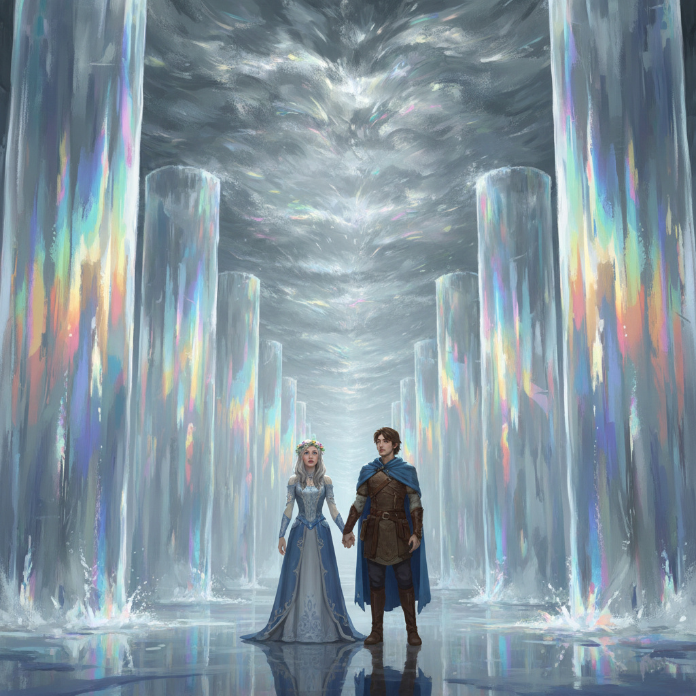
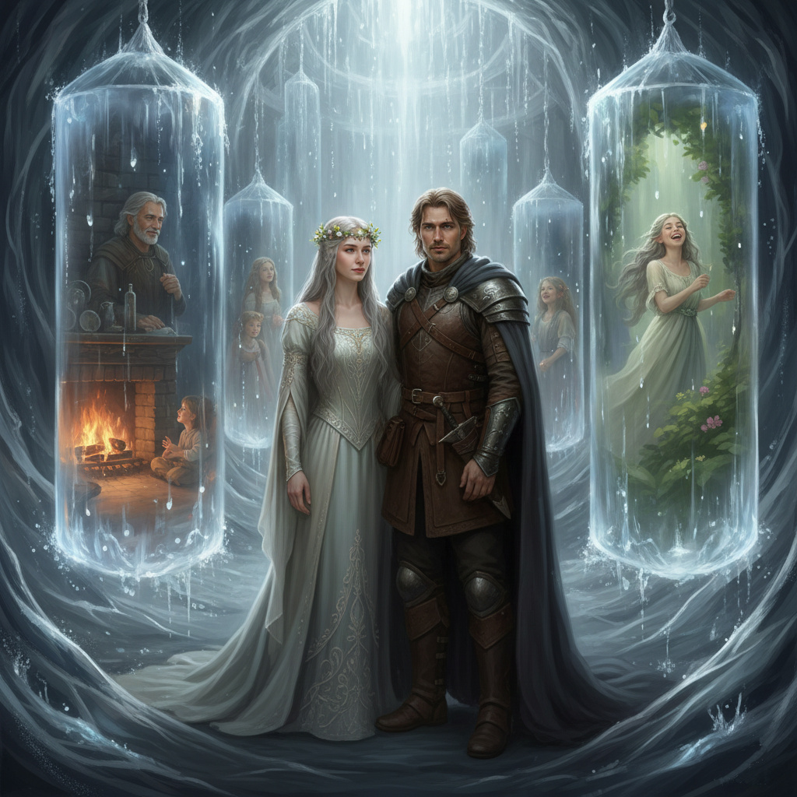
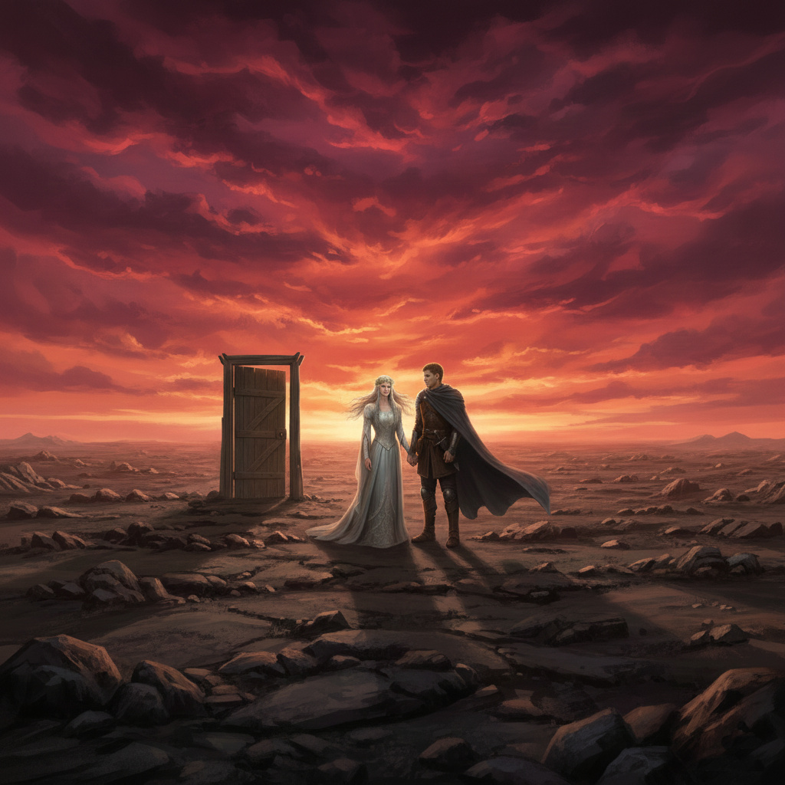

Tizennegyedik Fejezet
A Választások Csarnoka és a „Mi lett volna, ha” Fátyla
Ajánlom egy kedves barátomnak, aki keresi a pillanatban rejlő örökkévalóságot, és mer hinni a szív órájának szavában.
Az Árnyékélet
Aetheria legmagasabb tornya nem kőből épült, hanem sűrű, ezüstös párából, ami állandóan mozgott, mintha lélegezne. Amikor Honóra és Alerion beléptek a legfelső szintre, nem egy termet találtak, hanem egy végtelennek tűnő folyosót, ahol az oldalfalak helyett tükröződő vízfátylak hullottak alá a semmiből. A levegőnek hűvös, ózonos illata volt, mint egy nyári vihar utáni pillanatnak, amely örökre megfagyott az időben.
– Ez a Választások Csarnoka – suttogta Honóra, és a hangja beleveszett a víz lágy csobogásába. – Itt minden vízcsepp egy-egy el nem ágazott út. Itt laknak a döntéseink árnyékai. Olyan életek ezek, Alerion, amiket sosem éltünk meg, mégis a részünkké váltak azzal, hogy nemet mondtunk rájuk.
Alerion megállt az első vízfátyol előtt. A lezúduló víztükör nem torzított, inkább mélységet adott a látványnak. Ahogy belenézett, megpillantotta önmagát. De ez az Alerion nem indult el a Szivárvány-tóhoz azon a sorsfordító hajnalon.
A képen a lovag otthon maradt. Alerion látta, ahogy a víztükör túloldalán lévő énje éppen egy nehéz, tölgyfa asztalnál ül. Nem viselt páncélt, csak egy finom szövésű, sötétkék zubbonyt. Feleségül vett egy nemes hölgyet a szomszédos várból – a nőt, akit az apja szánt neki, és akinek a nevét a valódi életében már rég elfeledte. Most őszülő halántékkal, gyermekeitől körülvéve ült a kandalló mellett.
A szoba melegét szinte érezni lehetett a vízfátyolon keresztül; a sülő hús és a fenyőparázs illata szinte átszivárgott a mágián. Az az Alerion nevetett. Biztonságban volt. Nem volt rajta sebhely, a válla nem dőlt előre a sokéves kardforgatás és a veszteségek súlya alatt.
Ám ahogy a lovag közelebb lépett, a szívébe mart a felismerés. A képen látható férfi szemei tiszták voltak ugyan, de üresek. Hiányzott belőlük az a mély, csillogó értelem és az a sötét, viharvert bölcsesség, amit az Időfalóval való találkozás és a világ peremén tett utazások adtak neki. Ez az ember nem ismerte a csillagok dalát, és sosem látta Aetheria hajnalát a fellegek felett.
– Nézd – mondta Alerion halkan, és keze remegve közelített a vízfelszín felé, de nem merte megérinteni. – Ott nem fáj semmim. A régi sebek nem sajognak az esős napokon... és ott mindenki, akit szerettem, még él. Apám még mindig a birtokot igazgatja, és a barátaim nem maradtak ott a mocsárban.
Elhallgatott, s a csendet csak a vízfátylak monoton, altatószerű moraja törte meg. Egy pillanatra megkísértette a gondolat: vajon elcserélné-e minden tudását és Honóra társaságát erre a békés, de súlytalan nyugalomra?
A Súlytalan Boldogság Kísértése
Közben Honóra egy távolabbi, aranylóbb fényben játszó fátyol előtt állt meg. Őt a kép az Időhurok-szigeten mutatta, abban az örök pillanatban, ahol az idő nem folyó volt, hanem egy önmagába visszatérő tó. A képen Honóra sosem törte meg a harmincadik nap átkát. Ott örökké fiatal maradt, a bőre selymes fényű volt, mentes a vándorlás porától és a fáradtság árnyékaitól.
A vízfátyol mögül a kacagása olyan édesen, olyan kristálytisztán hallatszott, hogy szinte fájt a fülnek; olyan volt, mint a legtisztább ezüstcsengő szava. Ebben a valóságban nem ismerte a „Súlyos Percek” gyötrő súlyát, azt a fojtogató érzést, amikor minden másodperc egy-egy sorsdöntő választás terhét hordozza. Nem ismerte a gyászt, nem tudta, milyen érzés elveszíteni egy világot, de a szemeiben nem tükröződött az a mélységes intimitás sem, amit csak Alerion érintése és a közösen átélt viharok kovácsoltak össze.
– Olyan könnyűnek tűnik az az élet – suttogta a tündér, és ujjai hegyével majdnem érintette a hűvös párát. – Nincs benne bizonytalanság. Nincs benne az a jeges félelem, amit Aetheria kettészakadásakor éreztem. Ott a holnap nem egy fenyegetés, hanem a ma tökéletes másolata.
A Választások Csarnoka ekkor kezdte kifejteni valódi, alattomos erejét: a kísértést. A vízfátylak lassan tágulni kezdtek, a csobogásuk üteme átvette a szívverésük ritmusát. A víztükrök hívogatóan hullámoztak, mintha a valóság fala elvékonyodott volna, és csak egyetlen, apró lépést kellene tenniük, hogy beleolvadjanak abba a „könnyebb” létezésbe.
A levegő hirtelen sűrűvé vált, megtelt az elszalasztott lehetőségek bódító illatával. Alerion orrába behatolt a frissen sült kenyér otthonos illata, a tiszta vászon és a biztonságos otthon melege. Ez az illat nem a kalandvágyat, hanem a megfáradt harcos vágyát szólította meg: a vágyat a megpihenésre.
Alerion már emelte a lábát. A talpa alatt a ködös padló szilárdulni látszott a vízfátyol túloldalán lévő kandalló fényében. Az elméje, amit elhomályosított a csarnok éneke, azt súgta: „Miért küzdesz? Miért várod a holnapot, ami lehet, hogy újabb sebeket és végső pusztulást hoz, ha itt a garantált béke? Miért választanád a véres valóságot a tökéletes álom helyett?”
De ekkor, a kábultság sűrűjében, a lovag elméjében felvillant egy kép: a huszonhét golyó. A fém hideg tapintása, a golyók súlya a tenyerében, és a rideg, könyörtelen logika, amit a próbák során tanult meg.
„Ha a mérleg egyensúlyban van, a súlytalan az igaz” – derengett fel benne a felismerés.
Rájött, hogy ez a „könnyű” élet azért súlytalan, mert nincs benne valóságos tét. Az az Alerion, aki nem szenvedett, nem is szeretett igazán. Az a Honóra, aki nem félt, sosem volt igazán szabad. A fájdalom volt az a horgony, amely a valódi világhoz kötötte őket.
A Valóság Súlya
– Várj, Honóra! – Alerion hangja nem kiáltás volt, hanem egy rekedt, parancsoló moraj, amely úgy hasított bele a csarnok fojtogatóan édes csendjébe, mint egy éles penge a selyembe. A bűvölet egy pillanatra megbicsaklott. – Nézd meg jobban azokat a képeket! Nézd meg azt a férfit a kandallónál és azt a nőt a szigeten! Az ottani Alerionnak nincs szüksége rád. Az ottani Honórának nincs szüksége rám. Azok az utak simák, fényesek és tökéletesek... de üresek. Hiányzik belőlük az a súrlódás, az a metsző fájdalom és az a küzdelem, ami minket azzá tett, akik most vagyunk.
Honóra keze megállt a fátyol pereménél, az ujjai már szinte érintették a másvilági aranyfényt. Megfordult, és a tekintete lassan kitisztult, ahogy Alerionra nézett.
– Igazad van – suttogta, és a hangja most már nem a vízcsobogást utánozta, hanem visszakapta saját, törékeny erejét. – Azok a nők és férfiak ott... ők nem mi vagyunk. Ők csak a lehetőségeink szobrai, márványba faragott ígéretek, amiknek nincs lehelete. Ha belépnénk oda, elveszítenénk azt a közös történetet, amit nem a kényelemben, hanem a porban, a ködben és a nézeteltéréseinkben írtunk. Ott nem lenne közös a sebünk, Alerion.
Alerion ekkor odalépett a saját, csábítóan „biztonságos” tükörképéhez. Egy másodpercig még nézte a kandalló mellett ülő férfit, az idilli békét, majd ahelyett, hogy átlépett volna a küszöbön, kemény mozdulattal a vízbe mártotta a kezét. A hideg folyadék szétzilálta a képet, a gyermekeit, a házát; a vízfátyol ezer apró, jelentéktelen cseppé bomlott.
– A választásom nem egy életmód, hanem egy személy – mondta Alerion, és a szavai visszhangoztak a végtelen folyosón. – Téged választottalak a Szivárvány-tónál, az ismeretlen minden veszélyével együtt, és most téged választalak a kényelmes hazugság ellenében is. A sebhelyeim többet érnek, mint az a békés álom.
Ahogy a kép szétfoszlott, a Választások Csarnoka megremegett. Az elszalasztott lehetőségek édes, bódító illata hirtelen elillant, és helyette a valóság friss, csípős, szinte égető szaga töltötte be a teret. Olyan volt, mint a fagyos hegyi levegő. A vízfátylak, mintha csak megrémültek volna az igazságtól, visszahúzódtak a padló rései közé, a semmibe veszve. A végtelennek tűnő folyosó összezsugorodott, és a falak helyén egy egyszerű, dísztelen, viharvert faajtó jelent meg.

– Sokan maradnak itt – mondta Honóra halk szomorúsággal, miközben egy kendővel letörölte az arcáról a rárakódott párát. – Sokan élik le a valódi életüket abban a bénító hitben, hogy a másik út jobb lett volna. Rabjai lesznek egy olyan múltnak, ami sosem történt meg. De mi most már tudjuk, Alerion: az az út a legjobb, amin ketten járunk, bármilyen rögös is. Mert ezen az úton minden lépésnek súlya van.
Lassan, egymás kezét fogva léptek ki az ajtón. Aetheria ezüstös ködből szőtt tornya egyetlen szempillantás alatt tűnt el a hátuk mögül, mintha sosem létezett volna.
Előttük egy kopár, sziklás fennsík terült el, amely vadnak és barátságtalannak tűnt a torony kényelme után. Az ég alja már nem a mágikus ezüstben játszott, hanem mélyvörösben és vészjósló narancsban izzott. A szél kemény volt és érdes, de amikor Alerion beszívta, érezte, hogy tüdeje megtelik élettel. Ez a valóság volt. És bármi várta is őket a vörös ég alatt, azt már nem árnyékokként, hanem hús-vér emberekként fogják fogadni.
